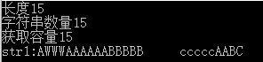

string str1="aaa"; char c='c'; str1.assign("ABCAAAAAAABBBBB");//替换str1 string str2="1111111"; cout<<"长度"<<str1.length()<<endl;//获取字符串长度 //（长度==数量） cout<<"字符串数量"<<str1.size()<<endl;//获取字符串数量,等价于length() cout<<"获取容量"<<str1.capacity()<<endl;//获取容量,容量包含了当前string里不必增加内存就能使用的字符数即包含未使用内存 //15为单位增加 str1.resize(20);//表示设置当前string里的串大小,若设置大小大于当前串长度,则用字符‘\0’来填充多余的. str1.resize(25,c);//设置串大小，若设置大小大于当前串长度,则用字符‘c’来填充多余的 str1.reserve(10);//设置string里的串容量,不会填充数据.//数据多余10 容量+10；小于10 容量=10； // str1.swap(str2);//交换 str1 和 str2 的字符串； str1.push_back('A');//在str1末尾添加一个'A'字符,参数必须是字符形式 str1.append ("ABC");//在str1末尾添加一个"ABC"字符串,参数必须是字符串形式 str1.insert(1,"cha");//在str1的下标为1的位置,插入"cha" // str1.erase(1);//删除下标为2的位置,比如: "ABCD" --> "AB" //循环删除：删除下标为2以后的全部 str1.erase(1,3);//从下标为2的位置删除1个,比如: "ABCD" --> "ABD" // str1.clear();//删除所有 str1.replace(1,3, "WWW"); //从下标为1的位置,替换3个字节,为"WWW" str1.empty();//判断为空, 为空返回真true cout<<"str1:"<<str1<<endl; //cout<<"str2:"<<str2<<endl;
输出：
